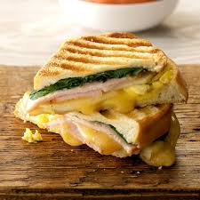

Brunch sandwich

Description
In this recipe we will use leftover bread or tortillas to make an easy and fast breakfast.
Ingredients
- Leftover slices of bread or tortillas
- 1 avocado
- 1/4 cups of lemon juice
- 1 tomato
- Salt to taste
- 2 eggs
- 2 tablespoons of cream cheese
- Toast your bread on both sides.
- Mix the avocado with sliced tomatoes, lemon juice and salt
- In a shallow skillet fry the eggs.
- Spread the cream cheese inside both of the buns and add the previously mixed avocado and tomato sauce.